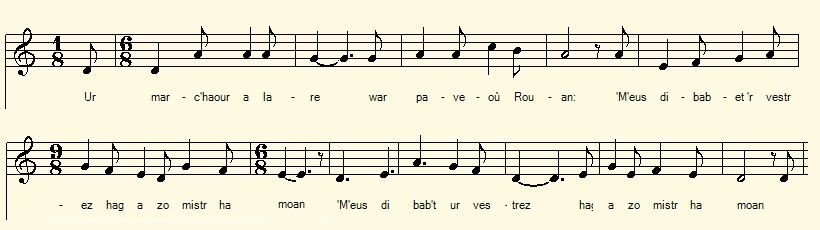

|
A propos de la mélodie: Inconnue; La Villemarqué a utilisé la strophe 10 dans le chant du Barzhaz La ceinture de mariage (strophes 7 et 8) qui présente des analogies avec la gwerz "le Comte Guillaume" qu'il avait partiellement notée p. 243 du carnet N°1 (il y est aussi question d'une bergère -berjerennik). On peut donc penser à un des timbres de ce dernier chant, en l'occurrence, à une mélodie trirée de "Musiques bretonnes" (Gwerzioù ha Sonioù Breiz-Izel) de Maurice Duhamel, Paris, 1913, où elle est donnée comme accompagnant une des versions de "Ar c'hont Gwilhoù" publiées par F-M. Luzel dans "Gwerzioù II" (1874): c'est la version N° 104, chantée par Maryvonne Le Flem de Port-Blanc (Trégor). A propos du texte Il semble que La Villemarqué soit le seul à avoir noté cette belle ballade. Il avait même conscience de l'avoir notée deux fois, car, en remarque préliminaire au chant "Gwerz an Intañvez" (Complainte de la veuve) à la page 254, outre le nom de la chanteuse et le lieu de collecte, "Chanté par Marie Mokaer de Brennilis", il indique : "Voir p.66 verso, Ar Marc'hadour". Cette information est complétée à la fin du poème, p. 255: "Voir page 67: Marijan Fichou de Brennilis". Les numéros de page ont ceux de sa propre numérotation. Ils correspondent dans la seconde numérotation adoptée ici aux pages 126 et 127. Cette autre informatrice, Marie-Jeanne Fichou, également de Brennilis, doit être la chanteuse de la 1ère version. Le souvenir de ce nom doit être encore tout frais chez cet auteur qui confond volontiers les noms des chanteurs. Faut-il en déduire que ces deux versions ont été collectées dans un espace de temps restreint, en 1841 ou 1842? Ce serait, sembe-t-il, sans doute une erreur, dans la mesure où le chant suivant, à la page 256, "Ar brezelour yaouank", porte la date "le 18 septembre 1863, chanté par Loranz Ar Saoz de Brennilis". La Villemarqué était revenu dans la région de Brennilis où il avait collecté deux versions de la même gwerz à 20 ans de distance La version 2 est donnée ci-après immédiatement à la suite de la première. On remarquera qu'en dépit d'une origine géographique commune, elles ont chacune une physionomie propre. |
About the tune Unknown. La Villemarqué used stanza 10 in the Barzhaz song The Wedding Belt (stanzas 7 and 8) which presents analogies with the gwerz "Count William" he had partially noted on p. 243 of notebook N ° 1 (also featuring a "shepherdess - berjerennik"). We can therefore think of one of the tunes accompanying this latter song, such as this melody out of "Breton music" ("Gwerzioù ha Sonioù Breiz-Izel") by Maurice Duhamel, Paris, 1913, where it is presented as a vehicle for a version of "Ar c'hont Gwilhoù" published by FM. Luzel in "Gwerzioù II" (1874), to wit, song N° 104, sung by Maryvonne Le Flem at Port-Blanc (Trégor). About the text It seems that La Villemarqué is the only collector to have recorded this beautiful ballad. He was even aware that he had written it down twice, for, as a preliminary remark to the song "Gwerz an Intañvez" (Lament of the widow) on page 254, besides the singer's name and the place of collection, "Sung by Marie Mokaer of Brennilis" , he adds the hint "See p.66 verso, Ar Marc'hadour". This information is completed at the end of the poem, p. 255 by an additional hint: "See page 67: Marijan Fichou of Brennilis ". The page numbers are those of La Villemarqué's own numbering. They correspond in the second numbering, adopted here, with pages 126 and 127. The latter informant, Marie-Jeanne Fichou, also of Brennilis, could be the singer of the 1st version. This name should have been still engraved in the memory of this author who readily confuses the names of singers. Shall we deduce that these two versions were collected in a narrow lapse of time, in 1841 or 1842? It would be a wrong inference, apparently, since the next song, on page 256, "Ar brezelour yaouank", is dated "On 18th Septembre 1863, sung by Laurence ar Saoz of Brennilis". La Villemarqué had revisited the Brennilis area and collected the same song 20 years later. Version 2 is given hereafter immediately before the firt version. It will be noted that despite a common geographical origin, each of them has a physiognomy of its own. |
|
BREZHONEK p. 126 I 1. Ur marcha(d)our a lare war pa(v)eou Rouan: [1] - 'M-eus dibab't ur vestrez hag a zo mistr ha moan; . Divieuz (muzell) he-deus goular, he divjod liv ar roz; He chorf zo ken galant, mont a refe em boz. [2] II 2. - Deuit-c'hwi ganin, berjerenn, da choaz ul lien moan! - Solakras, marc'ha(d)our, tanav int aet d'ar goan. - Deuit-c'hwi ganin, berjerenn, da ober ur bale Da glask din va lojeis c'hwi a oar an doare. [3] p. 127 / 67 3. - Ho lakay marc'ha(d)ourez en ur plas asuret, Lech ma vo tud onest, ha ned' int ket laered, [4] - Salokras, marc'hadour, an dra-se ne rin ket, Er ger-me zo tud goui(zi)ek hag a(ch)anon vez komzhet. [5] 4. Met me ho kelenno da vont gant ar chohu, [6] 'N ostaleri en dorn du-deou chwi a vo lojet sur. [7]- III Ar marc'hadour a choule toull dor nostaleri - Ho-mañ eo an ostaleri 'vit me lojañ hiriv 5. - Diskennit-c'hwi marha(d)our diskennit, deuit en ti Ha lakait-c'hwi ho keseg e-barzh ar marchosi! Foen ha kerc'h vo roet de(z)he, vo roet deoc'h da zebriñ. Foen ha kerc'h vo roet de(z)he, vo roet deoc'h da zebriñ. 6. Etre dek ha unnek eur oa poent mont da gousket, Ar verjerennig yaouank er ger zo erruet, - Ho kroazis mat, berjerenn, hag ho trugarekaat, Rak abalamour deoch-c'hwi me zo amañ lojet mad. 7. Setu aze 'r gwele, eñ akoutret e gwenn! Me garfe 'vit kant skoed evidomp hen dispenn. Setu aze gwele all warne(z)han pallennoù glas Me garfe vit kant skoed e vin hon-daou e-barzh. 8. - O salokras, marha(d)our, an dra-se ne rin ket. - Honnezh zo din 'n inor ha na zilezan ket. p. 128 Honnezh zo din un inor ha na zilezan ket. - E-benn un eizhtez goude a oant i dimezet. IV 9. Un teir zun pe ur miz ha oa graet an eured, Ar marc'hadour lare, un devezh de bried: - Me rankan mont war ar mor, da vale un nebeut, War-dro 'r varchadourez eme z'abandonet: 10. - En añv Doué, ma fried, na yit ket war ar mor, Rak 'n avel dro garus hag ar mor zo traitour, [8] Mar teufech da vervel, ha ganeoc'h 'met pep mad, [9] Me zo digas't amañ, nanav(ezh)an den ebet. [10] 11. - En añv Doué, ma fried, ouzhin na ouelit ket! Rannañ a rey ma chalon, ha red a vo monet, Me zegaso deoch arc'hant, Marivonig koant, 'r zilhad kaer a zatin hag un tomb a arc'hant. [11] V 12. Pa oa 'r verjerennig en he gwele kousket, 'r re, tri zaol war an nor, eñ en-deveus skoet, - Piv an hini a sko, dar choulz-mañ d'eus an noz, P'emaon bet em gwele, da gemer ma repoz? 13. Nemet me, Marivonik, da zegas deoc'h, 'vit presant, [12] Kalon ho pried Ivon,en un arched arc'hant, [13] [14] - Bremañ zo pemzek bloaz, me a oa glacharet p. 129 / 68 Varvas din tad ha mamm, breudeur ha c hoarezed, 14. Mes 'r re-se gant 'n amzer zo bet fin do chañvoù. Hemañ eo kañv ma fried, biken fin ane(zh)añ vo. Gwazh eo dun intañvez, dioueret ur par mat, Vit n'eo dur bugelig dioueret mamm ha tad . 15. Mes 'r re-se, gant 'n amzer, zo bet fin do chañvoù. Hemañ eo kañv ma fried, biken fin ane(zh)añ vo. 'r vugale-se gafe tud hag o magefe Un intañvezig paour, zo en nech noz ha deizh. [15] VI 16. Nep welje n intañvez o tisken eus he chambr, E-kreiz daou menech kozh, hag ur beleg yaouank Hag hi o von't gante etrezek an ilis 'Lavare 'r chapeled hag an De-profundis! [16] == KLT gant Christian Souchon |
TRADUCTION FRANCAISE p. 126 I 1. Un marchand proclamait dans les rues de Rouen: [1] - Celle que j'aime a des attraits des plus charmants Des lèvres de velours, des joues au teint de rose; Un corps dont la splendeur décourage ma prose. - [2] II 2. - Approchez-donc, bergère, et tâtez ce tissu! - Marchand, une autre fois, mon diner n'attend plus. - Venez faire, bergère, avec moi quelques pas Je cherche un logement, ne m'aideriez-vous pas? [3]. p. 127 / 67 3. - Je vous ferai marchande, un état de valeur, Parmi d'honnêtes gens et non point des voleurs, [4] - Excusez-moi, marchand, mais je n'en ferai rien, J'ai ma réputation à défendre et j'y tiens.. [5]. 4. Mais je vous dirais bien de longer la cohue, [6] Il est un hôtel sûr à droite, dans la rue. - [7] III Le marchand frappe au seuil de cette auberge et dit: - Pouvez-vous me loger ici pour une nuit? 5. - Descendez-donc, marchand, entrez-donc, je vous prie Ces chevaux, vous pouvez les mettre à l'écurie! Pour eux, foin et avoine, un bon repas pour vous. Pour eux, foin et avoine, un bon repas pour vous. 6. Bientôt onze heures et chacun va se coucher Quand il entend la jeune bergère rentrer, - Vous rencontrer ce fut une chance, merci, Grâce à vous, j'ai trouvé cet excellent logis. 7. Mais voyez ce beau lit, aussi blanc qu'un suaire Je donnerais bien cent écus pour le défaire. Et cet autre couvert d'un bel édredon bleu, Cent écus pour que nous y dormions tous les deux! 8. - Excusez-moi, marchand, de celà plus un mot! - Un tel sens de l'honneur! C'est elle qu'il me faut. p. 128 C'est elle qu'il me faut! Oh, quelle dignité!- Huit jours se passent donc. Les voilà fiancés! IV 9. Trois semaines, un mois: on fête le mariage. Le marchand dit un jour à l'épouse si sage: - Je dois prendre la mer, il me faut voyager, La marchande lui dit, quand il va la quitter: 10. - Au nom du ciel, ami, n'affronte pas la mer, Car le vent est changeant et l'océan pervers. [8] Si tu viens à mourir, je perdrai tout mon bien, [9] Tu m'as conduite ici. L'on ne m'y connaît point.[10] 11. - Au nom du Ciel, ma femme, il ne faut pas pleurer. Cela me fend le coeur, mais je dois embarquer, Je te rapporterai, ma douce Maryvonne, Un manteau de satin, d'argent une bonbonne. [11] V 12. Tandis que la bergère en son lit sommeillait Elle entend à son huis deux, puis trois coups frappés, - Quel est celui qui cogne en pleine nuit ainsi, Quand j'espère trouver le repos qui me fuit? 13. C'est moi, Maryvonnik, qui t'apporte un présent: [12] Le coeur de ton époux dans un coffret d'argent, [13] [14] - Quinze ans déjà que le chagrin ronge mon coeur. p. 129 / 68 Mes deux parents sont morts, mes frères et mes soeurs, 14. Si d'eux tous j'avais fait mon deuil avec le temps, Celui de mon époux dure éternellement. Perdre un époux chéri, l'épreuve est plus amère, Que pour l'enfant qu'on prive et de mère et de père. 15. Si de tous j'avais fait mon deuil, je le sais bien. Jamais le deuil de mon époux ne prendrait fin. L'enfant trouve toujours quelqu'un pour le nourrir La veuve, nuit et jour, ne cesse de souffrir. [15] VI 16. La veuve ce jour-là descendit l'escalier, Un jeune prêtre et deux vieux moines l'escortaient, Son corps fut transporté dans le choeur de l'église Pour qu'un De-profundis et un rosaire on dise! [16] Traduction Christian Souchon (c) 2020 |
ENGLISH TRANSLATION p. 126 I 1. A merchant proclaimed in the streets of Rouen: [1] - The one I love is a slender girl, most charming Velvet lips she has, cheeks with a pink complexion; A body which a poet might compare to nothing, [2] II 2. - Come closer, shepherdess, come and feel these fine sheets! - Merchant, later perhaps, I'm having my dinner. - Come with me and help me in the crowded streets. For accommodation I need an advisor!. [3] p. 127/67 3. You'll be a merchant's wife, it's a state of value, Among honest people you shall live and not thieves. [4] - Merchant, I'll do nothing of the like, with your leave, I'm afraid of gossip on things that are not true. [5] 4. I advise you to go along the market hall [6] You'll find a safe hostel on the right of the street. - [7] III Once on the inn's threshold he knocked at the door: - I'm looking for a place to sleep tonight and eat 5. - Come down, merchant, you'll find here a bed and table! These horses, you can put them all in the stable! There's for them, hay and oats, and a good meal for you. Aye, hay and oats for them, and for you a good stew, 6. 'Twas eleven o'clock. All were going to bed: The girl was coming home, as fair as aforesaid, - That my way crossed your way was happy luck, thank you! For the good home I found I am indebted too. 7. Look at this bed! Its sheets dazzle like midday sun I'd give a hundred crowns now to have it undone. And this other covered with a blue comforter, A hundred crowns if we both sleep there together! 8. - The shame of it, merchant, of it not one more word! - Such a sense of honour! I must have this rare bird. p. 128 She is the wife I need! Such sense of dignity! - Eight days passed and they were engaged definitely! IV 9. Three weeks had passed by, one month and they were wed The merchant once went to his charming wife and said - I have to go to sea, can't help it, I believe. The merchant wife in turn said when he was to leave. 10. - In the name of Heaven, don't go, my dear husband The wind turns every way. Sea's tricks are underhand. [8] If you happen to die, I'm lost and left alone [9] You once have brought me here. I am to all unknown. (10] 11. - In the name of Heaven, my wife, you must not moan. For it will break my heart. Yet I cannot decline. I'll bring you from my trip, my darling Maryvonne, A fine gown of satin, a splendid silver shrine. [11] V 12. Now, while the shepherdess in her bed was asleep She woke as she heard two, then three knocks on the door - At this time of the night, from bed who makes me leap When I hardly can sleep and don't rest any more? 13. It's me, Maryvonnik, a gift to you I bring: [12] Here, in a silver shrine, your husband Yvon's heart [13] [14] - Never for fifteen years did grief from me depart. p. 129/68 My two parents are dead, as are all my siblings. 14. If I was over time with my fate compliant, Grief for a dear husband was everlasting grief. An ordeal less susceptible of relief Than, for a small child, being deprived of her parents. 15. I mourned all of them. My grief became softer Unlike the tears that for my dear husband I shed. An orphan child always by someone will be fed A widow, night and day, continues to suffer. [15] VI 16. Down the stairs was carried the poor woman that day A young priest and two old monks were escorting her, Her body was laid on trestles in the church choir. A rosary and De-profundis they did pray. [16] Translation Christian Souchon (c) 2020 |
|
BREZHONEK p. 254 I 1. Ar kaerañ eus krouadurez hag a zo war ar bed, Ya m'he-dije madoù, mez e giz n'he-deus ket ! - Madoù ma mestr karet, madoù zo ret kaouet (x) (x) - Madoù ma muiañ-karet, madoù vo bet kaouet. 2. - M'em-bo c'hoazh ar blijadur da zont d'az darempred (1) M'em-bezo ar blijadur o vont d'e dal am pried. Me ray ul lestrig vihan a yey war ar mor bras A yey betek an Indez, peotramant pelloc'h c'hoazh. 3. Me gaso dit ur vantell d'eus ar c'haerañ stof glas, Me gaso dit 'r vantell d'eus ar c'haerañ stof glas, Me gaso dit 'r vantell, ha perlezennoù gwenn, (xx) (xx) D'eus ar Zav-heol, a luc'ho tro-war-dro da gerc'henn. - 4.- O salokras, ma fried, n'it ket war ar mor bras! Gwell eo din chom hep mantell, hep sae e voulouz glas. An avel a zo chañchus, ar mor a zo dambrez. Mar fell d'eoc'h bezañ beuzet, petra rafemp siouazh ? 5. - Gwell e vije d'ur bugel dioueret mamm ha tad, Vit ma ve d'ur gwreg yaouank kollet ur pried mat: Ar paour-kaezh emzivad a vezo konfortet, Mez ar paour-kaezh intañvez a jommo glac'haret.. II 6. Pa oa an intañvezig war he gwele kousket, Tri daolig war ar prenestr, hi he-deus o c'hlevet: - Dalit, dalit, intañvez, O dalit ur prezant: Setu kalon ho pried en un arched (kasetenn) arc'hant! 7. - Ma malloz ran d'an arc'hant, d'an arc'hant ke(me)nt d'an aour, (1) da dont da wel(e)t anhe(zh)i p. 255 Zo kiriek 'z-on intañvez, dioueret ma fried paour ! Neb a welje an intañvezig o vonet d'an iliz Ha ganti daou gabusin hag hi oa gwisket griz. 8. Pa oa an intañvezig war paveioù Rouan, En he zreid boutoù-ler flamm hag ul loeroù stamm gloan, (2) (2) En he zorn ur bodig roz, he gwaz d'eus he c'hostez, D'eus e dok ur blumajenn, d'eus e lez ur c'hleze. 9. En he zreid boutoù mezher hag ul loeroù stamm du, Daeroù d'eus he daoulagad oc'h aroziñ ar ru. Daeroù d'eus he daoulagad o koueziñ d'an douar, Neuze hallit krediñ serten hag e oa e glac'har. (Neuze halle lavaret: "Houman zo e glac'har!") 10. En he glac'har a lare, hi lare tre ma ye : - Ho ped truez, ma Doue, Ho ped, ouzhin truez ! Me a garfe bout lakaet, en ur plasik bihan Ganin ma daou vugelig ha ma fried Morvan. -[17] KLT gant Christian Souchon |
TRADUCTION FRANCAISE p. 254 I 1. La plus belle créature au monde ne peut pas, Offriir d'autres biens quand est épuisé ce qu'elle a! - Bienaimé de quoi vivre, il va falloir nous procurer. (x) (x) - A cela ma charmante, je compte m'employer. 2. - Je veux avoir le plaisir de faire encor ma cour Car je tiens à bien servir mon cher et bel amour. Il me faut une barque pour affronter l'océan. Je m'en irai jusqu'en Inde ou plus loin en Orient. 3. Je te rapporterai d'Inde un beau manteau d'azur, Taillé dans une étoffe de l'azur le plus pur, Et puis des perles blanches qui te feront un collier. (xx) (xx) Et l'Orient resplendira sur ton beau cou doré. - 4.- Je vous en prie, cher époux, sur la mer n'allez point! De ce beau manteau d'azur, je me passerai bien. Le vent change sans cesse, l'océan est capricieux. Si vous vous noyiez, comme nous serions malheureux! 5. - L'orphelin de père et mère a presqu'un sort meilleur Que celui de la jeune veuve d'un noble coeur: Jamais on abandonne le pauvre enfant à son sort, Mais la veuve doit pleurer jusqu'au jour de sa mort. II 6. Quand notre jeune veuve était couchée dans son lit, Trois petits coups à la vitre on frappe et elle ouvrit: - Prenez donc, jeune veuve! Je vous apporte un présent: C'est le coeur de votre époux dans un coffret d'argent! 7. - Ma malédiction soit sur l'argent, comme sur l'or (1) qu'il reviendra la voir p. 255 Sans ce mirage, mon cher époux vivrait encor ! Chacun put voir la veuve qu'à l'église on conduisit, Encadrée de deux capucins revêtus de gris. 8. Lorsque la veuve arpentait les pavés de Rouen, A ses pieds des bas de laine et des souliers luisants, (2) (2) Tenant en main des roses, d'un époux accompagnée Au chef orné d'un panache, à la taille une épée. 9. Portant chaussures d'étoffe et bas noirs de tricot, Tandis que ses pleurs inondent la rue, un ruisseau! Ses yeux versent des larmes qui descendent jusqu'à terre Point de doute, elle éprouvait une peine sincère. (Et tout le monde disait "Cette peine est sincère!") 10. Tout en marchant la pauvre ruminait son chagrin : - O, mon Dieu, pitié! Quel sort malheureux que le mien! Je voudrais qu'on me mette en quelqu'endroit caché des gens Avec mes deux nourrissons et mon époux Morvan. -[17] Traduction Christian Souchon (c) 2020 |
ENGLISH TRANSLATION p. 254 I 1. The most beautiful creature in the world cannot be Expected to offer riches, but her own beauty! - My dear husband, we need goods just to keep us from starving (x) (x) - I shall go on errand and I shall bring some, darling. 2. - I want to have the pleasure of courting you again And all I may offer, my precious jewel shall obtain. All I need is a small boat to travel across the sea. I want to go to India or further East, maybe. 3. A magnificent coat from India I shall bring you Cut in the finest fabric, silk of the purest blue, And I shall bring you white pearls to match this beautiful coat. (xx) (xx) The splendour of Orient shall shine around your throatt. - 4.- I entreat you, dear husband, do not go to the sea! Without this beautiful coat I'm as fine as can be. The wind changes constantly, the ocean is capricious. If you drowned, how unhappy we would be, think of us! 5. - Orphans of father and mother have a better fate Than a young widow, a dove who's mourning for her mate : Folks never will abandon the child to hunger and cries, But the poor widow is left to weep until she dies. II 6. One night when this young widow was lying in her bed, Three little knocks on the pane, three little knocks she heard: - Take it, take it, young widow! It's a present I bring you: This is your husband's heart in a silver box, it's true! 7. - My curse on all things that from silver or gold derive! (1) that he will come back to see her p. 255 But for this treacherous stuffs, my love were still alive! They all saw how the widow was taken to church that day, To her right and to her left capuchins clad in gray. 8. When the widow walked the cobblestones of Rouen town, Fine woolen stockings and fine shiny shoes she had on (2) (2) She held a bunch of roses, a husband went on her side Whose hat a plume adorned, to whose waist a sword was tied. 9. Refined cloth shoes she wore, black stockings to match them, The salted tears that she shed did flood the street, a stream! Her eyes shed tears that went down in a stream onto the ground There was no doubt that her grief was sincere and profound. ("The pain she shows is sincere!" so everyone has found) 10. While walking the street, the poor girl brooded o'er her grief: - From my unfortunate fate, God, may I have relief? An unassuming place where I'd be glad to hide away, With my two kids and my husband Morvan there to stay! - [17] |
|
[1] Cette ballade doit remonter à avant la Révolution. Il y avait en Basse-Bretagne des foires importantes, renommées bien au-delà des frontières de la province. Par exemple, en 1794, se tenaient à Carhaix 3 grandes foires annuelles dont parle le géographe Jacques Cambry dans son « Voyage dans le Finistère », 1836, p. 123. Beaucoup de Normands venaient y vendre du drap de Rouen, de Caen et de Falaise, de lorfèvrerie et d'autres marchandises. Ils venaient y acheter des bestiaux et des chevaux. Cest précisément le cas de ce marchand de Rouen, (un Normand qui porte pourtant un prénom breton, Yvon) qui fait le commerce de tissus: Lorsquil rencontre sa future femme, il transporte avec lui du drap, sur plusieurs chevaux de somme (cf. str.5, ligne 2) . Quand il fait mine de la séduire à lhostellerie il vante la qualité des draps de lit et des couvertures (str.7). Peut-être fait-il également le commerce d'orfèvrerie: Lorsquil doit quitter sa jeune épouse il promet de lui rapporter un coffret dargent, une promesse qu'après sa mort, son fantôme mettra un point dhonneur à honorer. On notera la ressemblance de ce personnage avec le Marc'hadour Rouan (Marchand de Rouen) collecté par De Penguern, ainsi que le Yannik Ar Bon-Garçon" de Luzel, une histoire d'aubergistes assassins dont une version contaminée par une gwerz historique sur la prise de Pestivien par Duguesclin prendra place dans le Barzhaz Breizh de 1845 sous le titre de Gwaz Aotrou Gwesklen (le "Vassal de Duguesclin"). Le comportement du Jeannot Bon-Garçon ressemble d'ailleurs à celui d'Yvon, car nous apprend la version de Luzel, quand il rencontre la servante: "Yannig Ar Bongarsoñ ganti a vadine / Ar vatezh Margodig outañ huanade..." (Jeannot Le Bon-Garçon badinait avec elle, quand la servante Margot le regarda en soupirant...) [2] A la 1ère strophe, le marchand normand est à Rouen. Il se prépare semble-t-il, à retourner dans la ville de Basse-Bretagne où lors dune foire précédente il a rencontré une jeune beauté, dont il vante les mérites aux gens quil rencontre. La dernière ligne signifie littéralement: "son corps est si galant(élégant), il prendra place dans mon couplet"; Cette distanciation teintée d'ironie est inhabituelle dans les gwerzioù. [3] A la 2ème strophe, l'action s'est déplacée aux abords de la ville où a lieu la foire et de façon fort abrupte, comme c'est l'usage dans les gwerzioù. C'est encore la campagne puisque la jeune fille dont il était question à la strophe 1 est en train de garder des moutons (ou des vaches), ce qui justifie le nom de "Berjerenn" (bergère) dont la gratifie le marchand. Comme il est déjà venu à cette foire et a certainement déjà logé dans cette ville, il est curieux que le marchand demande à la jeune fille de lui indiquer un hôtel. Cest sans doute un prétexte pour entamer une conversation avec elle. A moins que la difficulté de circuler à travers la ville de foire avec plusieurs chevaux soit, ce jour-là, telle qu'il doive modifier ses habitudes. [4] D'emblée le marchand propose le mariage à la bergère, mais il ne s'agit encore que d'un badinage que la jeune fille esquive poliment. L'attitude de l'homme est conforme aux conceptions machistes de jadis. Lesdites conceptions étaient encore bien ancrées dans les murs il y a peu : Dans un film américain de 1959 avec Cary Grant et Tony Curtis, "Operation Petticoat", le capitaine de sous-marin interprêté par Cary Grant explique que « les femmes sont protégées contre les entreprises des hommes par la loi en dessous de 18 ans, par la nature au-delà de 80 ans (peut-être cite-t-il une limite moins reculée ). Entre les deux, dit-il, elles savent rudement bien se débrouiller pour se défendre ». C'est bien ainsi qu'on l'entendait autrefois en Bretagne. On regardait généralement avec bienveillance les garçons coureurs de filles. Telle était la nature des hommes. Aux filles de se méfier! Ainsi, un proverbe de Châteaulin met-il cette phrase dans la bouche de la mère de garçons:
On notera que les goujateries profèrée par le marchand, sans aucun doute sur le ton de la plaisanterie, sont uniquement verbales. Avec un minimum de mots et avec un art consommé de la litote la gwerz suggère la sincérité des sentiments qui l'animent et que la jeune fille devine puisqu'elle accepte très vite d'épouser ce marchand normand. [5] Ce qui n''empêche pas la jeune fille de se méfier des commérages qui ne tarderaient pas à se répandre, si on la voyait escorter par la ville un inconnu. "Er ger-me zo tud goui(zi)ek (habil)" signifie "chez moi, il y a des gens qui ont la langue bien pendue". Dans le manuscrit le mot est glosé par un synonyme: "habil". En outre, peut-être le chanteur a-t-il dit "Er ker-mañ", "dans cette ville". [6] "Cohue": Le mot français semble emprunté au breton avec un glissement de sens de "marché couvert" à "grande foule, bousculade". Le dictionnaire du Père Grégoire de Rostrenen (1732) traduit le mot "cohue" par "cohuy, covy, vannetais cohu" et le glose par "halle" (il ne connaît pas d'autre sens). C'est par ce mot qu'on désigne les Halles de Vannes (entre autres). "Mont gant ar c'hohu" ne peut vouloir dire que "longer la cohue" et non pas "la traverser avec des chevaux"! [7] Il ressort de la suite de l'histoire que l'hôtel sûr que la bergère recommande est tenu par le couple qui l'a adoptée quand elle était jeune orpheline. On verra que c'est là qu'elle habite. [8] Comme on l'a dit, cette strophe 10 est reprise partiellement dans La ceinture de mariage (strophes 7 et 8), poème qui ressemble à un manteau d'Arlequin tant il emprunte à de multiples sources. Insensiblement, la gwerz change de registre. On passe du comique au sérieux, pour finir dans le tragique. [9] "Ha ganeoc'h nemet pep mad": "et avec vous, le seul bien que j'aie jamais possédé". Il s'agit d'une déclaration d'amour, pas de considérations juridiques sur les droits des veuves en matière de successions. [10] Les chants bretons évoquent rarement l'isolement linguistique qui rendait le déracinement très pénible. Ici, il est suggéré (on ne parle pas breton à Rouen). [11] "Tomb" ou "Nomb": Le manuscrit de La Villemarqué semble porter le mot « tomb » (mais le texte déchiffré publié en ligne propose lexpression « un nomb a archant » (un... d'argent). La Villemarqué avait écrit au-dessus de ce mot mystérieux une glose presqu'illisible comprenant le mot « toullad » qui veut dire « le contenu d'un trou» (toull=trou). Le mot breton « tombé » (pluriel "tombéou") existait réellement autrefois. Il figure dans le dictionnaire breton de 1732 précédé de la mention "als", pour "alias" auquel le Père Grégoire donnait le sens d'"autrefois". Peut-être ce mot avait-il, comme langlais/américain « casket », le double sens de « coffret à bijoux » et « urne funéraire ». Cela conviendrait parfaitement pour la suite de lhistoire. [12] Marivonig - Ivon: " A partir de la strophe 11, les personnages sont entrés dans l'intimité du lecteur. Ce ne sont plus les entités archétypales qu'étaient le « marchand » et la « bergère », mais de proches amis, « Maryvonne (ik) » et « Yvon ». C'est, semble-t-il, un procédé inédit ou tout-au-moins très rare. [13] "Arched arc'hant": "cercueil d'argent". Il semble qu' "arched" soit employé ici pour "arc'h" (pluriel "irc'hier") qui signifie "coffre", mais aussi localement "cercueil". Comme dans le chant Ar Breur mager (Le frère de lait), cette gwerz illustre le thème de la fidélité et du serment honoré en dépit de la mort. Cette gwerz, décidément étonnante, sublime un marchand prompt à débiter plaisanteries douteuses, voire des goujateries, pour en faire un personnage surnaturel et tragique, fidèle à sa parole par-delà le trépas. [14] Il s'agit ici d' un coffret funéraire où, suivant une ancienne pratique, (et à l'imitation des antiques canopes), on recueillait certains viscères de personnages importants. En particulier, depuis le XIIIème siècle la préparation de la dépouille des rois de France s'accompagnait de la séparation du corps et du cur. Par tradition, on enterrait le corps à la nécropole royale, la basilique de Saint-Denis. En revanche, le cur, libre de tout engagement officiel, était offert à une communauté religieuse, à un maréchal (ou à une maîtresse). [15] La jeune fille est une orpheline. Cest delle-même quelle parle aux strophes 13, 14 et 15. Elle est la fille adoptive des aubergistes qui lemploient comme bergère. Elle ne rentre chez elle que très tard. Lhostellerie quelle a recommandée au voyageur nest autre que sa propre maison. [16] Chapelet: cette gwerz ne peut pas être antérieure au 13ème siècle, époque où la pratique du chapelet est répandue par les Dominicains. "De profundis" sont les premiers mots latins du psaume 130 extrait du Livre des Psaumes de la Bible, classé 129 dans la Vulgate. Sa version latine : De profundis clamavi ad te, Domine (Des profondeurs, je criai vers Toi, Seigneur) a inspiré de nombreux compositeurs et écrivains. [17] Cette seconde version, si elle ne comporte pas de prologue comme la première, présente un épilogue, lui aussi emprunté à une autre chanson, à savoir Lojaïk (Louison). Il semble que la pauvre veuve, pour pouvoir nourrir ses deux enfants, se soit remariée avec un notable de Rouen portant chapeau empanaché et épée. Cependant elle regrette sa situation modeste antérieure et son premier époux, un Breton nommé Morvan.. La longueur des vers conduit à rechercher un autre timbre pour cette versiion. On peut penser, par exemple, à la mélodie qui accompagne Le pardon de Saint Fiacre. |
[1] The composition of this ballad very likely predates the Revolution. There were important fairs in Lower Brittany, renowned far beyond the borders of the province. For example, in 1794, 3 major annual fairs were held at Carhaix, as stated by the geographer Jacques Cambry in his "Voyage dans le Finistère", 1836, p. 123. Many Normans came there to sell cloth from Rouen, Caen and Falaise, goldsmith's work and other goods. They also used to come here to buy cattle and horses. This applies precisely to this Rouen merchant, (a Norman who nevertheless has a Breton first name, Yvon) who trades in fabrics. When he meets his future wife, he carries with him cloth, on several horses of burden (cf. str. 5, line 2). When he endeavours to seduce her at the hotel, he praises the quality of the bed sheets and blankets (str.7). Perhaps he is also engaged in jewelry trade: When he has to leave his young wife, he promises to bring her a silver box, a promise that after his death, his ghost will make a point of fulfilling . Note the resemblance of this character with the protagonist of the gwerz Marc'hadour Rouan (Marchand de Rouen) collected by De Penguern, as well as Yannik Ar Bon-Garçon " collected by Luzel, a story of murderous innkeepers. A version of this ballad, contaminated by a historic gwerz on the capture of Pestivien Castle by Duguesclin, was to take place in the 1845 Barzhaz Breizh, under the title of Gwaz Aotrou Gwesklen (the" Vassal of Duguesclin "). The behaviour of Jeannot Bon-Garçon also resembles that of Yvon: As stated in Luzel's version, when he met the maidservant: "Yannig Ar Bongarsoñ ganti a vadine / Ar vatezh Margodig outañ huanade ..." Jeannot Bon-Garçon started kidding with her, until servant Margot looked at him with a sigh ... [2] In the 1st verse, the Norman merchant is in Rouen. He seems to be preparing to return to the city of Lower Brittany, where he met a young beauty at a previous fair, whose merits he praises to all and sundry. The last line literally means: "her body is so fair (elegant)! I can't help versifying it!"; This ironic tinge is unusual in gwerzioù. [3] In the 2nd stanza, the action has moved to the outskirts of the city where the fair takes place. It has very abruptly, as is usual in gwerzioù. We are still surrounded with meadows since the young girl referred to in stanza 1 is keeping sheep (or cows), which justifies her being addressed as "Berjerenn" (shepherdess) by the merchant. Since he has already come to this fair and has certainly already stayed in this city, it is astonishing that the merchant should ask the girl to indicate a hotel to him. Its probably just a pretext to start a conversation with her. Unless the difficulty of circulating through the fairground along with several horses imposes on that very day that he should modify his habits. [4] The merchant immediately proposes marriage to the shepherdess, but it is still only a banter that the girl politely dodges. His attitude of is consistent with the macho conceptions of yesteryear. Said conceptions were still well established until recently: In a 1959 American film with Cary Grant and Tony Curtis starring, "Operation Petticoat", the submarine captain interpreted by Cary Grant explains that "women under 18 years of age are protected against men's attempts by law, and by nature beyond 80 years of age (perhaps he mentions a less remote limit ) Between theses limits, he says, women perfectly know how to defend themselves.. This is how it used to be understood in Brittany. Womanizers were generally looked upon with kindness. Such was the nature of men. Girls should beware! Thus, a proverb from Châteaulin puts this sentence in the mouth of the mother of boys:
Note that the improprieties uttered by the merchant, no doubt by way joke, are only verbal. With a minimum of words and with a consummate art of understatement the gwerz suggests the sincerity of his feelings which the young girl guesses, since she accepts very quickly to marry her Norman merchant. [5] Which does not prevent the girl from being wary of gossip that would soon spread, if people saw her escorting a stranger through the city. "Er ger-me zo tud goui(zi )ek (habil) " means" there are people in my house who are real chatterboxes ". In the manuscript the word is glossed by a synonym: "skillful". Besides, maybe the singer actually said "Er ker-mañ" , "in this city". [6] "Cohue": This French word seems to be borrowed from Breton with a meaning shift from "hall market" to "large crowd, hustle and bustle". Father Grégoire de Rostrenen's dictionary (1732) translates the word "cohue" by "cohuy, covy", Vannes dialect "cohu" and glosses it by "hall" (he knows no other meaning). This word "La Cohue" applies to the Hall market of Vannes (among others). "Mont gant ar c'hohu" can only mean "going along the Market Hall" and not "crossing it with horses!" [7] It follows from the rest of the story that the safe hotel that the shepherdess recommends is kept by the couple who adopted her when she was a young orphan. We will see that this is where she lives. [8] As already stated, stanza 10 is partially included in The wedding belt (stanzas 7 and 8), a Barzhaz poem which resembles a patchwork coat as it borrows from multiple sources. Imperceptibly, the gwerz changes its register. From comical to serious, ending in tragic. [9] "Ha ganeoc'h nemet pep mad" : "and with you, I lose the only good I have ever possessed". This is a declaration of love, not legal considerations on widows' inheritance rights. [10] Breton songs rarely evoke the linguistic isolation which made uprooting for Breton speakers very painful. Here it is slightly suggested (they don't speak Breton in Rouen). [11] "Tomb" or "Nomb": The manuscript of La Villemarqué seems to have the word "tomb" (but the deciphered text published online suggests the phrase "un nomb a arc'hant" (a silver ?). La Villemarqué had written above this mysterious word an almost illegible gloss including the word "toullad" which means "the content of a hole" (toull = hole). The Breton word "tombe" (plural "tombeou") actually existed formerly. It appears in the Breton dictionary of 1732 preceded by the mention "als", for "alias" understood by Father Grégoire as "formerly". Perhaps this word had, like the English / American "casket", the double meaning of "jewelery box" and "funeral casket", "relic shrine". That would perfectly account for the rest of the story. [12] Marivonig - Ivon: "From stanza 11, the characters enter the intimacy of the reader. They are no longer the archetypal entities that were styled the" merchant "and the" shepherdess ", but his close friends , "Maryvonne (ik)" and "Yvon". This seems to be quite unusual in gwerzioù or at least very rare. [13] "Arched arc'hant": "silver coffin". It seems that "arched" is used here for "arc'h" (plural "irc'hier") which means "chest", but also locally "coffin". As in the song Ar Breur mager (The Fosterbrother), this gwerz illustrates the theme of fidelity and oath honoured in spite of death. This decidedly astonishing gwerz, sublimates a merchant quick to spout dubious jokes, and makes him a supernatural and tragic character, who keeps faithful to his word beyond death. [14] This is a funeral box where, according to ancient practice, (and in imitation of ancient canopic jars), certain viscera of important figures were collected. In particular, since the 13th century the preparation of the remains of the kings of France was accompanied by the separation of the body and the heart. Traditionally, the body was buried in the royal necropolis, the basilica of Saint-Denis, whilst the heart, as it was free from any official commitment, was offered to a religious community, or a fieldmarshal (or a mistress!) [15] The girl is an orphan. In stanzas 13, 14 and 15 herself she recounts her own story. She is the adopted daughter of the innkeepers who employ her as a shepherdess. She doesn't come home until very late. The hostel that she recommended to the traveler is none other than her own house. [16] Rosary: ??this gwerz cannot be earlier than the 13th century, when the practice of the rosary was widespread by the Dominicans. "De profundis" are the first Latin words of psalm 130 taken from the Book of Psalms of the Bible, classified 129 in the Vulgate. Its Latin version: De profundis clamavi ad te, Domine (From the depths, I cried out to You, Lord) has inspired many composers and writers. [17] This second version does not include a prologue like the first, but an epilogue, also borrowed from another song, namely Lojaïk (Louison) . It seems that the unfortunate widow, in order to be able to feed her two children, married again. Her new husband belongs to the Rouen gentry. He wears a plumed hat and a sword. However, she regrets her previous modest station and her first husband, a Breton named Morvan. The length of the verses prompts us to look for another tune for this version. One can think, for example, of the melody which accompanies The pardon of Saint Fiacre .. |